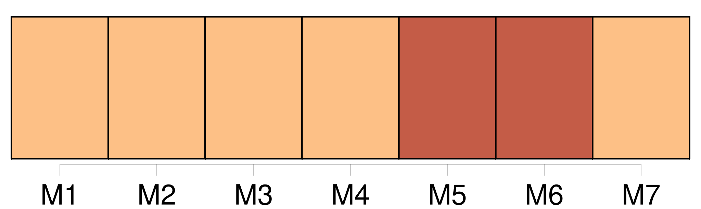

Longueur nb maillons : 20 mentions |
  |
Depuis le jour où nous sommes arrivés, j'ai remarqué qu' [un des gardiens de notre chambre] a toujours un air de tristesse et de sympathie quand [il] nous regarde. Je ne comprends pas ce qu' [il] dit, et [il] ne m'entend pas non plus ; cependant nous nous parlons beaucoup et très vite. Hier, en me montrant [sa] poitrine et [son] gosier, [il] m'a fait entendre qu' [il] était malade. Quand le commandant est venu, je lui ai dit que j'étais bien triste pour [le pauvre Filippo] : « Ah, Signora, [il] n'est pas à plaindre : voici deux ans qu' [il] s'est marié avec une belle jeune femme de seize ans ; [il] a deux enfants et [il] reçoit par jour, trois sols et six deniers. Il est vrai qu' [il] est obligé de passer les nuits au lazaret ; mais, le matin, [il] peut aller chez [lui] une heure ou deux. Il n'y a pas eu moyen de [lui] accorder plus de temps, à cause de [son] emploi : E che volete, Signora. Père clément et miséricordieux, qui donnez plein contentement à [cet honnête cœur] , avec trois sols et six deniers par jour!! [1 phrases]
faites que je me souvienne de [Filippo] quand quelque chose me manquera, ou quand je penserai que quelque chose me manque … |
La ressource peut être téléchargée sur la page Ortolang
Si vous avez des questions ou vous voyez des erreurs, merci d'envoyer un mail à silvia.federzoni89@gmail.com
Site développé par S. Federzoni (contact)